Colors and styles
Color and opacity
For color definitions and conversions, you can use Colors.jl.
setcolor() and sethue() will apply a single solid or transparent color to new graphics.
setblend() will apply a smooth transition between two or more colors to new graphics.
setmesh() will apply a color mesh to new graphics.
The difference between the setcolor() and sethue() functions is that sethue() doesn't change alpha opacity (transparency), so you can change the hue without changing the current alpha opacity (transparency) value.
Named colors, such as "gold", or "lavender", can be found in Colors.color_names dictionary.
fontsize(8)
cols = sort(collect(Colors.color_names))
ncols = 15
nrows = convert(Int, ceil(length(cols) / ncols))
table = Table(nrows, ncols, 800/ncols, 800/nrows)
gamma = 2.2
for n in 1:length(cols)
col = cols[n][1]
r, g, b = sethue(col)
box(table[n], table.colwidths[1], table.rowheights[1], :fill)
luminance = 0.2126 * r^gamma + 0.7152 * g^gamma + 0.0722 * b^gamma
(luminance > 0.5^gamma) ? sethue("black") : sethue("white")
text(string(cols[n][1]), table[n], halign=:center, valign=:middle)
end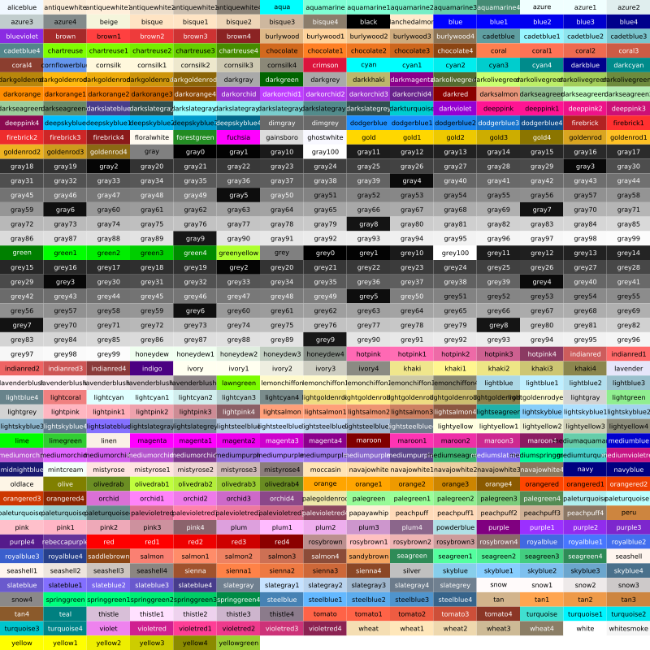
(To make the label stand out against the background, the luminance is calculated, then used to choose the label's color.)
Luxor.sethue — Functionsethue("black")
sethue(0.3, 0.7, 0.9)
setcolor(sethue("red")..., .2)Set the color without changing opacity.
sethue() is like setcolor(), but we sometimes want to change the current color without changing alpha/opacity. Using sethue() rather than setcolor() doesn't change the current alpha opacity.
See also setcolor.
sethue(col::Colors.Colorant)Set the color without changing the current alpha/opacity:
sethue(0.3, 0.7, 0.9)Set the color's r, g, b values. Use setcolor(r, g, b, a) to set transparent colors.
sethue((r, g, b))Set the color to the tuple's values.
sethue((r, g, b, a))Set the color to the tuple's values.
Luxor.setcolor — Functionsetcolor("gold")
setcolor("darkturquoise")Set the current color to a named color. This use the definitions in Colors.jl to convert a string to RGBA eg setcolor("gold") or "green", "darkturquoise", "lavender", etc. The list is at Colors.color_names.
Use sethue() for changing colors without changing current opacity level.
sethue() and setcolor() return the three or four values that were used:
julia> setcolor(sethue("red")..., .8)
(1.0, 0.0, 0.0, 0.8)
julia> sethue(setcolor("red")[1:3]...)
(1.0, 0.0, 0.0)You can also do:
using Colors
sethue(colorant"red")See also setcolor.
setcolor(r, g, b)
setcolor(r, g, b, alpha)
setcolor(color)
setcolor(col::Colors.Colorant)
setcolor(sethue("red")..., .2)Set the current color.
Examples:
setcolor(convert(Colors.HSV, Colors.RGB(0.5, 1, 1)))
setcolor(.2, .3, .4, .5)
setcolor(convert(Colors.HSV, Colors.RGB(0.5, 1, 1)))
for i in 1:15:360
setcolor(convert(Colors.RGB, Colors.HSV(i, 1, 1)))
...
endSee also sethue.
setcolor((r, g, b))Set the color to the tuple's values.
setcolor((r, g, b, a))Set the color to the tuple's values.
Luxor.setgray — Functionsetgray(n)
setgrey(n)Set the color to a gray level of n, where n is between 0 and 1.
Luxor.setopacity — Functionsetopacity(alpha)Set the current opacity to a value between 0 and 1. This modifies the alpha value of the current color.
Luxor.randomhue — Functionrandomhue()Set a random hue, without changing the current alpha opacity.
Luxor.randomcolor — Functionrandomcolor()Set a random color. This may change the current alpha opacity too.
Luxor.setblend — Functionsetblend(blend)Start using the named blend for filling graphics.
This aligns the original coordinates of the blend definition with the current axes.
Luxor.setantialias — Functionsetantialias(n)Set the current antialiasing to a value between 0 and 6:
antialias_default = 0, the default antialiasing for the subsystem and target device
antialias_none = 1, use a bilevel alpha mask
antialias_gray = 2, use single-color antialiasing (using shades of gray for black text on a white background, for example)
antialias_subpixel = 3, take advantage of the order of subpixel elements on devices such as LCD panels
antialias_fast = 4, perform some antialiasing but prefer speed over quality
antialias_good = 5, balance quality against performance
antialias_best = 6, render at the highest quality, sacrificing speed if necessaryThis affects graphics, but not text, and it doesn't apply to all types of output file.
Line styles
There are set- functions for controlling subsequent lines' width, end shape, join behavior, and dash pattern:
for l in 1:3
sethue("black")
setline(20)
setlinecap(["butt", "square", "round"][l])
textcentred(["butt", "square", "round"][l], 80l, 80)
setlinejoin(["round", "miter", "bevel"][l])
textcentred(["round", "miter", "bevel"][l], 80l, 120)
poly(ngon(Point(80l, 0), 20, 3, 0, vertices=true), :strokepreserve, close=false)
sethue("white")
setline(1)
strokepath()
end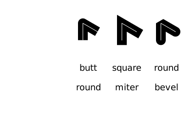
patterns = ["solid", "dotted", "dot", "dotdashed", "longdashed",
"shortdashed", "dash", "dashed", "dotdotdashed", "dotdotdotdashed"]
setline(12)
table = Table(fill(20, length(patterns)), [50, 300])
text.(patterns, table[:, 1], halign=:right, valign=:middle)
for p in 1:length(patterns)
setdash(patterns[p])
pt = table[p, 2]
line(pt - (150, 0), pt + (150, 0), :stroke)
end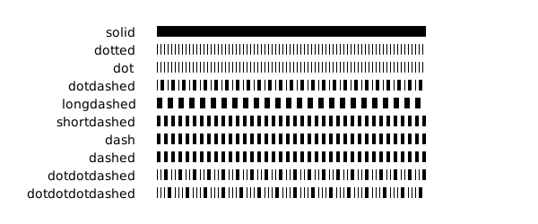
To define more complicated dash patterns in Luxor, pass a vector to setdash().
dashes = [50.0, # ink
10.0, # skip
10.0, # ink
10.0 # skip
]
setdash(dashes)function dashing()
setline(8)
setlinecap("butt")
patterns = [10, 4, 50, 25, 14, 100]
table = Table(fill(20, length(patterns)), [40, 325])
for p in 1:length(patterns)
setdash(patterns)
pt = table[p, 2]
text(string(patterns), table[p, 1], halign=:right, valign=:middle)
line(pt - (150, 0), pt + (200, 0), :stroke)
patterns = circshift(patterns, 1)
pop!(patterns)
end
end
dashing()
Notice that odd-numbered patterns flip the ink and skip numbers each time through.
Luxor.setline — Functionsetline(n)Set the line width, in points.
Luxor.setlinecap — Functionsetlinecap(s)Set the line ends. s can be "butt" or :butt (the default), "square" or :square, or "round" or :round.
Luxor.setlinejoin — Functionsetlinejoin("miter")
setlinejoin("round")
setlinejoin("bevel")Set the line join style, or how to render the junction of two lines when stroking.
Luxor.setdash — Functionsetdash("dot")Set the dash pattern to one of: "solid", "dotted", "dot", "dotdashed", "longdashed", "shortdashed", "dash", "dashed", "dotdotdashed", "dotdotdotdashed".
Use setdash(dashes::Vector) to specify the pattern numerically.
setdash(dashes::Vector, offset=0.0)Set the dash pattern to the values in dashes. The first number is the length of the ink, the second the gap, and so on.
The offset specifies an offset into the pattern at which the stroke begins. So an offset of 10 means that the stroke starts at dashes[1] + 10 into the pattern.
Or use setdash("dot") etc.
Luxor.fillstroke — Functionfillstroke()Fill and stroke the current path.
Luxor.strokepath — Functionstrokepath()Stroke the current path with the current line width, line join, line cap, and dash settings. The current path is then cleared.
Luxor.fillpath — Functionfillpath()Fill the current path according to the current settings. The current path is then cleared.
Luxor.strokepreserve — Functionstrokepreserve()Stroke the current path with current line width, line join, line cap, and dash settings, but then keep the path current.
Luxor.fillpreserve — Functionfillpreserve()Fill the current path with current settings, but then keep the path current.
Luxor.paint — Functionpaint()Paint the current clip region with the current settings.
Luxor.do_action — Functiondo_action(action)This is usually called by other graphics functions. Actions for graphics commands include :fill, :stroke, :clip, :fillstroke, :fillpreserve, :strokepreserve, :none, and :path.
Blends
A blend is a color gradient. Use setblend() to select a blend in the same way that you'd use setcolor() and sethue() to select a solid color.
You can make linear or radial blends. Use blend() in either case.
To create a simple linear blend between two colors, supply two points and two colors to blend():
orangeblue = blend(Point(-200, 0), Point(200, 0), "orange", "blue")
setblend(orangeblue)
box(O, 400, 100, :fill)
rulers()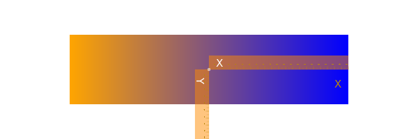
And for a radial blend, provide two point/radius pairs, and two colors:
greenmagenta = blend(Point(0, 0), 5, Point(0, 0), 150, "green", "magenta")
setblend(greenmagenta)
box(O, 400, 200, :fill)
rulers()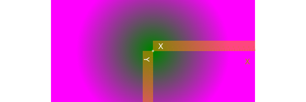
You can also use blend() to create an empty blend. Then you use addstop() to define the locations of specific colors along the blend, where 0 is the start, and 1 is the end.
goldblend = blend(Point(-200, 0), Point(200, 0))
addstop(goldblend, 0.0, "gold4")
addstop(goldblend, 0.25, "gold1")
addstop(goldblend, 0.5, "gold3")
addstop(goldblend, 0.75, "darkgoldenrod4")
addstop(goldblend, 1.0, "gold2")
setblend(goldblend)
box(O, 400, 200, :fill)
rulers()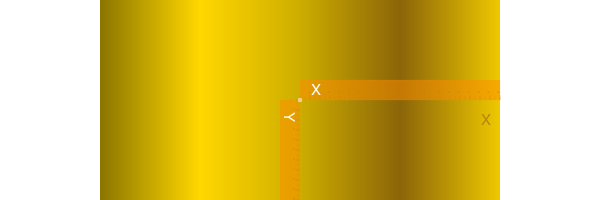
When you define blends, the location of the axes (eg the current workspace as defined by translate(), etc.), is important. In the first of the two following examples, the blend is selected before the axes are moved with translate(pos). The blend 'samples' the original location of the blend's definition.
goldblend = blend(Point(0, 0), Point(200, 0))
addstop(goldblend, 0.0, "gold4")
addstop(goldblend, 0.25, "gold1")
addstop(goldblend, 0.5, "gold3")
addstop(goldblend, 0.75, "darkgoldenrod4")
addstop(goldblend, 1.0, "gold2")
setblend(goldblend)
tiles = Tiler(600, 200, 1, 5, margin=10)
for (pos, n) in tiles
gsave()
setblend(goldblend)
translate(pos)
ellipse(O, tiles.tilewidth, tiles.tilewidth, :fill)
grestore()
end
Outside the range of the original blend's definition, the same color is used, no matter how far away from the origin you go (there are Cairo options to change this). But in the next example, the blend is relocated to the current axes, which have just been moved to the center of the tile. The blend refers to 0/0 each time, which is at the center of shape.
goldblend = blend(Point(0, 0), Point(200, 0))
addstop(goldblend, 0.0, "gold4")
addstop(goldblend, 0.25, "gold1")
addstop(goldblend, 0.5, "gold3")
addstop(goldblend, 0.75, "darkgoldenrod4")
addstop(goldblend, 1.0, "gold2")
setblend(goldblend)
tiles = Tiler(600, 200, 1, 5, margin=10)
for (pos, n) in tiles
gsave()
translate(pos)
setblend(goldblend)
ellipse(O, tiles.tilewidth, tiles.tilewidth, :fill)
grestore()
end
Luxor.blend — Functionblend(from::Point, to::Point)Create an empty linear blend.
A blend is a specification of how one color changes into another. Linear blends are defined by two points: parallel lines through these points define the start and stop locations of the blend. The blend is defined relative to the current axes origin. This means that you should be aware of the current axes when you define blends, and when you use them.
To add colors, use addstop().
blend(centerpos1, rad1, centerpos2, rad2, color1, color2)Create a radial blend.
Example:
redblue = blend(
pos, 0, # first circle center and radius
pos, tiles.tilewidth/2, # second circle center and radius
"red",
"blue"
)blend(pt1::Point, pt2::Point, color1, color2)Create a linear blend.
Example:
redblue = blend(pos, pos, "red", "blue")blend(from::Point, startradius, to::Point, endradius)Create an empty radial blend.
Radial blends are defined by two circles that define the start and stop locations. The first point is the center of the start circle, the first radius is the radius of the first circle.
A new blend is empty. To add colors, use addstop().
Luxor.addstop — Functionaddstop(b::Blend, offset, col)
addstop(b::Blend, offset, (r, g, b, a))
addstop(b::Blend, offset, string)Add a color stop to a blend. The offset specifies the location along the blend's 'control vector', which varies between 0 (beginning of the blend) and 1 (end of the blend). For linear blends, the control vector is from the start point to the end point. For radial blends, the control vector is from any point on the start circle, to the corresponding point on the end circle.
Examples:
blendredblue = blend(Point(0, 0), 0, Point(0, 0), 1)
addstop(blendredblue, 0, setcolor(sethue("red")..., .2))
addstop(blendredblue, 1, setcolor(sethue("blue")..., .2))
addstop(blendredblue, 0.5, sethue(randomhue()...))
addstop(blendredblue, 0.5, setcolor(randomcolor()...))Using blendadjust()
You can use blendadjust() to modify the blend so that objects scaled and positioned after the blend was defined are rendered correctly.
setline(20)
# first line
blendgoldmagenta = blend(Point(-100, 0), Point(100, 0), "gold", "magenta")
setblend(blendgoldmagenta)
line(Point(-100, -50), Point(100, -50))
strokepath()
# second line
blendadjust(blendgoldmagenta, Point(50, 0), 0.5, 0.5)
line(O, Point(100, 0))
strokepath()
# third line
blendadjust(blendgoldmagenta, Point(-50, 50), 0.5, 0.5)
line(Point(-100, 50), Point(0, 50))
strokepath()
# fourth line
gsave()
translate(0, 100)
scale(0.5, 0.5)
setblend(blendgoldmagenta)
line(Point(-100, 0), Point(100, 0))
strokepath()
grestore()
The blend is defined to span 200 units, horizontally centered at 0/0. The top line is also 200 units long and centered horizontally at 0/0, so the blend is rendered exactly as you'd hope.
The second line is only half as long, at 100 units, centered at 50/0, so blendadjust() is used to relocate the blend's center to the point 50/0 and scale it by 0.5 (100/200).
The third line is also 100 units long, centered at -50/0, so again blendadjust() is used to relocate the blend's center and scale it.
The fourth line shows that you can translate and scale the axes instead of adjusting the blend, if you use setblend() again in the new scene.
Luxor.blendadjust — Functionblendadjust(ablend, center::Point, xscale, yscale, rot=0)Modify an existing blend by scaling, translating, and rotating it so that it will fill a shape properly even if the position of the shape is nowhere near the original location of the blend's definition.
For example, if your blend definition was this (notice the 1)
blendgoldmagenta = blend(
Point(0, 0), 0, # first circle center and radius
Point(0, 0), 1, # second circle center and radius
"gold",
"magenta"
)you can use it in a shape that's 100 units across and centered at pos, by calling this:
blendadjust(blendgoldmagenta, Point(pos.x, pos.y), 100, 100)then use setblend():
setblend(blendgoldmagenta)Blending (compositing) operators
Graphics software provides ways to modify how the virtual "ink" is applied to previously-drawn graphic elements. In PhotoShop and other software, the compositing process is done using blend modes.
Use setmode() to set the blending mode of subsequent graphics.
origin()
# transparent, no background
fontsize(15)
setline(1)
tiles = Tiler(600, 600, 4, 5, margin=30)
modes = length(Luxor.blendingmodes)
setcolor("black")
for (pos, n) in tiles
n > modes && break
gsave()
translate(pos)
box(O, tiles.tilewidth-10, tiles.tileheight-10, :clip)
# calculate points for circles
diag = (Point(-tiles.tilewidth/2, -tiles.tileheight/2),
Point(tiles.tilewidth/2, tiles.tileheight/2))
upper = between(diag, 0.4)
lower = between(diag, 0.6)
# first red shape uses default blend operator
setcolor(0.7, 0, 0, .8)
circle(upper, tiles.tilewidth/4, :fill)
# second blue shape shows results of blend operator
setcolor(0, 0, 0.9, 0.4)
blendingmode = Luxor.blendingmodes[mod1(n, modes)]
setmode(blendingmode)
circle(lower, tiles.tilewidth/4, :fill)
clipreset()
grestore()
gsave()
translate(pos)
text(Luxor.blendingmodes[mod1(n, modes)], O.x, O.y + tiles.tilewidth/2, halign=:center)
grestore()
end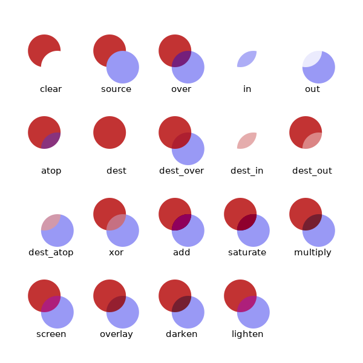
Notice in this example that clipping was used to restrict the area affected by the blending process.
In Cairo, these blend modes are called operators. For a more detailed explanation, refer to the Cairo documentation.
You can access the list of modes with the unexported symbol Luxor.blendingmodes.
Luxor.setmode — Functionsetmode(mode::AbstractString)Set the compositing/blending mode. mode can be one of:
"clear"Where the second object is drawn, the first is completely removed."source"The second object is drawn as if nothing else were below."over"The default mode: like two transparent slides overlapping."in"The first object is removed completely, the second is only drawn where the first was."out"The second object is drawn only where the first one wasn't."atop"The first object is mostly intact, but mixes both objects in the overlapping area. The second object object is not drawn elsewhere."dest"Discard the second object completely."dest_over"Like "over" but draw second object below the first"dest_in"Keep the first object whereever the second one overlaps."dest_out"The second object is used to reduce the visibility of the first where they overlap."dest_atop"Like "over" but draw second object below the first."xor"XOR where the objects overlap"add"Add the overlapping areas together"saturate"Increase Saturation where objects overlap"multiply"Multiply where objects overlap"screen"Input colors are complemented and multiplied, the product is complemented again. The result is at least as light as the lighter of the input colors."overlay"Multiplies or screens colors, depending on the lightness of the destination color."darken"Selects the darker of the color values in each component."lighten"Selects the lighter of the color values in each component.
See the Cairo documentation for details.
Luxor.getmode — Functiongetmode()Return the current compositing/blending mode as a string.
Meshes
A mesh provides smooth shading between three or four colors across a region defined by lines or curves.
To create a mesh, use the mesh() function and save the result as a mesh object. To use a mesh, supply the mesh object to the setmesh() function.
The mesh() function accepts either an array of Bézier paths or a polygon.
This basic example obtains a polygon from the drawing area using box(BoundingBox()... and uses the four corners of the mesh and the four colors in the array to build the mesh. The paint() function fills the drawing.
garishmesh = mesh(
box(BoundingBox(), vertices=true),
["purple", "green", "yellow", "red"])
setmesh(garishmesh)
paint()
setline(2)
sethue("white")
hypotrochoid(180, 81, 130, :stroke)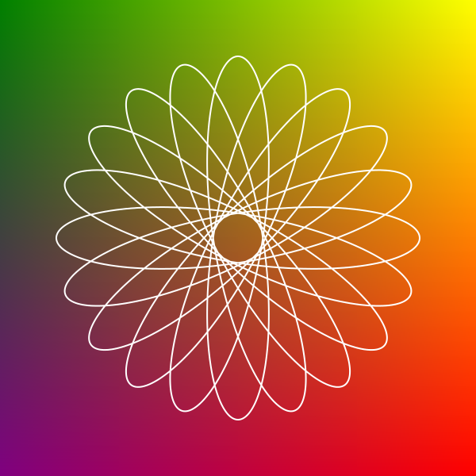
The next example uses a Bézier path conversion of a square as the outline of the mesh. Because the box to be filled is larger than the mesh's outlines, not all the box is filled.
setcolor("grey50")
circle.([Point(x, y) for x in -200:25:200, y in -200:25:200], 10, :fill)
bp = makebezierpath(box(O, 300, 300, vertices=true), smoothing=.4)
setline(3)
sethue("black")
drawbezierpath(bp, :stroke)
mesh1 = mesh(bp, [
Colors.RGBA(1, 0, 0, 1), # bottom left, red
Colors.RGBA(1, 1, 1, 0.0), # top left, transparent
Colors.RGB(0, 0, 1), # top right, blue
Colors.RGB(1, 0, 1) # bottom right, purple
])
setmesh(mesh1)
box(O, 500, 500, :fillpreserve)
sethue("grey50")
strokepath()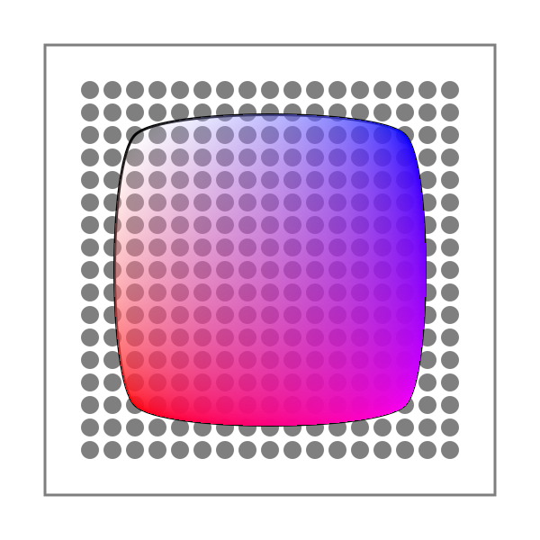
The second example uses a polygon defined by ngon() as the outline of the mesh. The mesh is drawn when the path is stroked.
pl = ngon(O, 250, 3, π/6, vertices=true)
mesh1 = mesh(pl, [
"purple",
"green",
"yellow"
])
setmesh(mesh1)
setline(180)
poly(pl, :strokepreserve, close=true)
setline(5)
sethue("black")
strokepath()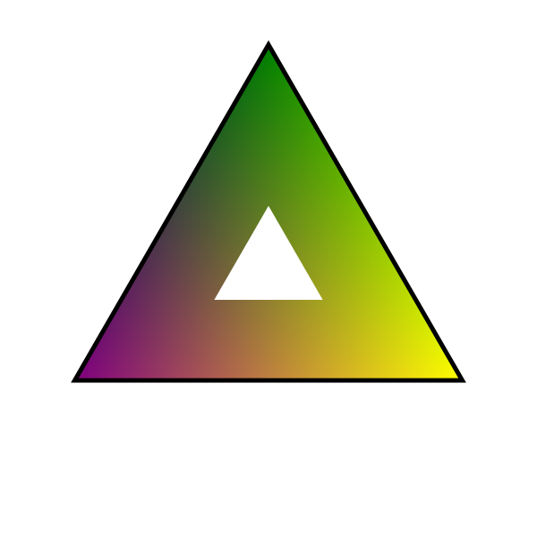
Luxor.mesh — Functionmesh(bezierpath::BezierPath,
colors=Array{Colors.Colorant, 1})Create a mesh. The first three or four elements of the supplied bezierpath define the three or four sides of the mesh shape.
The colors array define the color of each corner point. Colors are reused if necessary. At least one color should be supplied.
Use setmesh() to select the mesh, which will be used to fill shapes.
Example
@svg begin
bp = makebezierpath(ngon(O, 50, 4, 0, vertices=true))
mesh1 = mesh(bp, [
"red",
Colors.RGB(0, 1, 0),
Colors.RGB(0, 1, 1),
Colors.RGB(1, 0, 1)
])
setmesh(mesh1)
box(O, 500, 500, :fill)
endmesh(points::Array{Point},
colors=Array{Colors.Colorant, 1})Create a mesh.
Create a mesh. The first three or four sides of the supplied points polygon define the three or four sides of the mesh shape.
The colors array define the color of each corner point. Colors are reused if necessary. At least one color should be supplied.
Example
@svg begin
pl = ngon(O, 250, 3, pi/6, vertices=true)
mesh1 = mesh(pl, [
"purple",
Colors.RGBA(0.0, 1.0, 0.5, 0.5),
"yellow"
])
setmesh(mesh1)
setline(180)
ngon(O, 250, 3, pi/6, :strokepreserve)
setline(5)
sethue("black")
strokepath()
endLuxor.setmesh — Functionsetmesh(mesh::Mesh)Select a mesh previously created with mesh() for filling shapes.
Masks
A simple mask function lets you use a circular or rectangular shape to control graphics that are drawn over it. mask() takes a position and a shape, and returns a value between 0 and 1 for that position, depending on its position relative to the shape.
In the first example, the gray color of each tile is determined by its location relative to the center of the masking circle (O, bw/2); the value is 1.0 at the center, and 0.0 at the circumference. The value could be used to control opacity, shape, or anything else that is relevant to graphics at a particular position.
println("generating mask.png now...")
tiles = Tiler(600, 600, 15, 15, margin=0)
bw = boxwidth(BoundingBox())
for (pos, n) in tiles
setgray(mask(pos, O, bw/2))
box(pos, tiles.tilewidth, tiles.tileheight, :fillstroke)
end
sethue("white")
circle(O, bw/2, :stroke)generating mask.png now...
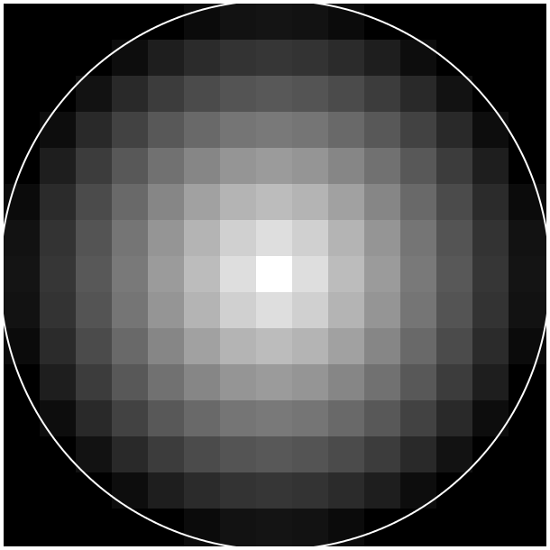
The second example uses the distance of each tile relative to the rectangle O, bw, bw to determine the gray color.
tiles = Tiler(600, 600, 30, 30)
bw = boxwidth(BoundingBox())
bh = boxheight(BoundingBox())
for (pos, n) in tiles
mv = mask(pos, O, bw, bh, easingfunction=easeinoutcubic)
setgray(mv)
box(pos, tiles.tilewidth, tiles.tileheight, :fillstroke)
end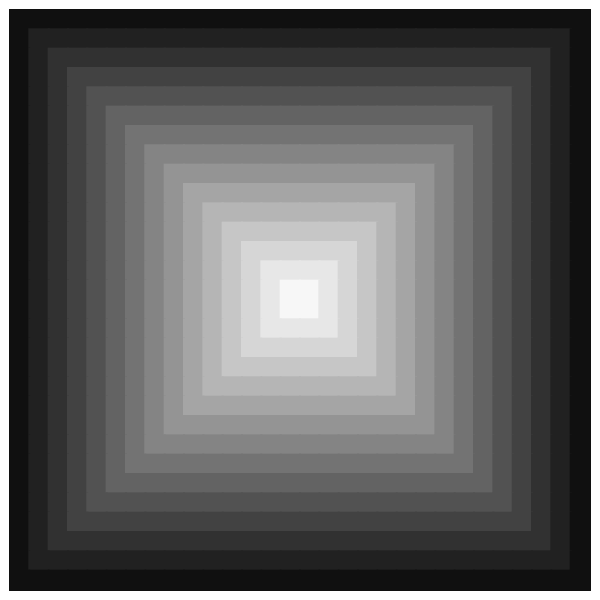
Luxor.mask — Functionmask(point::Point, focus::Point, radius)
max = 1.0,
min = 0.0,
easingfunction = easingflat)Calculate a value between 0 and 1 for a point relative to a circular area defined by focus and radius. The value will approach max (1.0) at the center of the circular area, and min (0.0) at the circumference.
mask(point::Point, focus::Point, width, height)
max = 1.0,
min = 0.0,
easingfunction = easingflat)Calculate a value between 0 and 1 for a point relative to a rectangular area defined by focus, width, and height. The value will approach max (1.0) at the center, and min (0.0) at the edges.